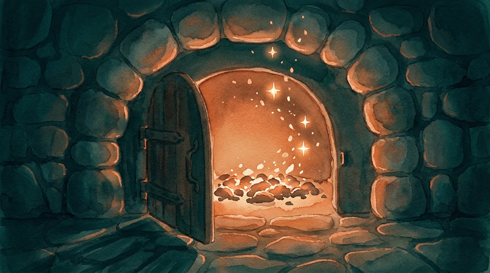
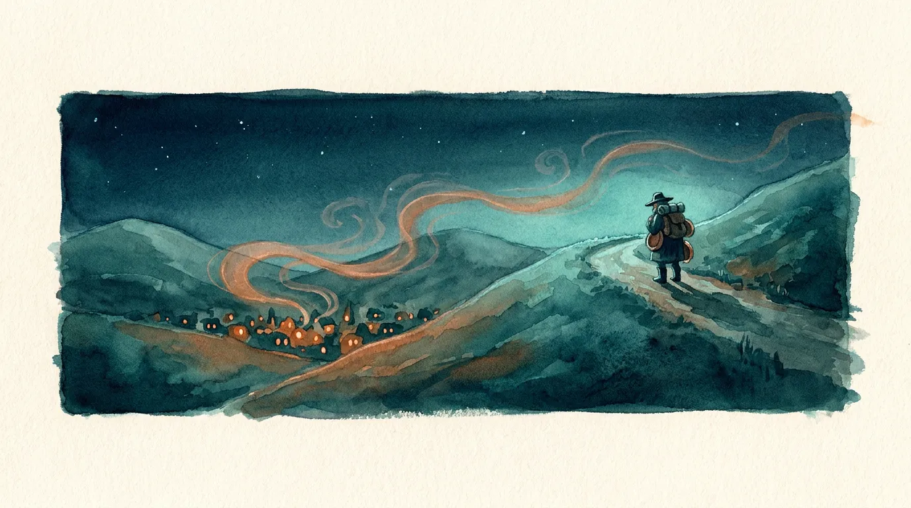
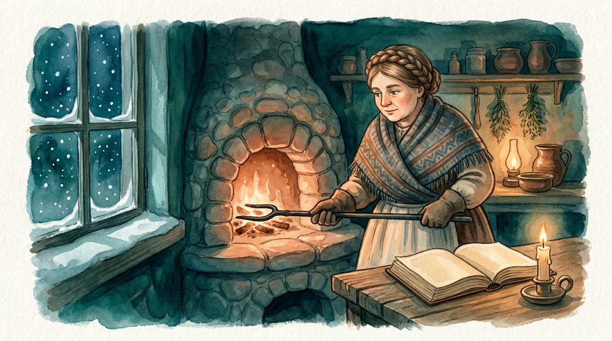
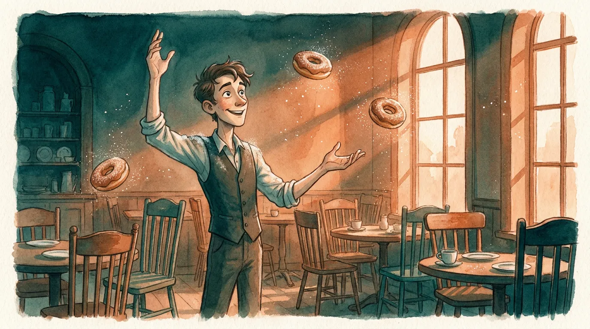
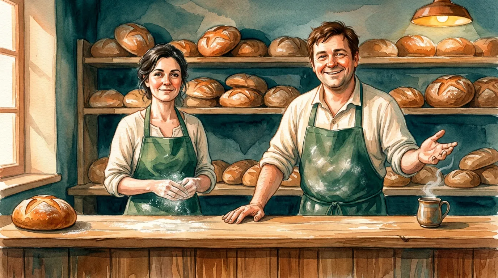

FOUR GENERATIONS, ONE FIRE
Every bakery has a story. Ours has four.

Elias Fable walked from town to town until the smell told him to stop. Between two hills he built an oven from river stone. It has not gone cold since.
Through every winter, through every storm, Marta kept the oven burning. She wrote everything down in a book the family simply calls The Book.


Oskar made bakes that behaved like small miracles — doughnuts lighter than they should be, loaves shaped like the things people loved. And when nobody wanted to leave, he gave them chairs.
Lena bakes. Tomas welcomes. The fire is in good hands.
Meet us at the counter